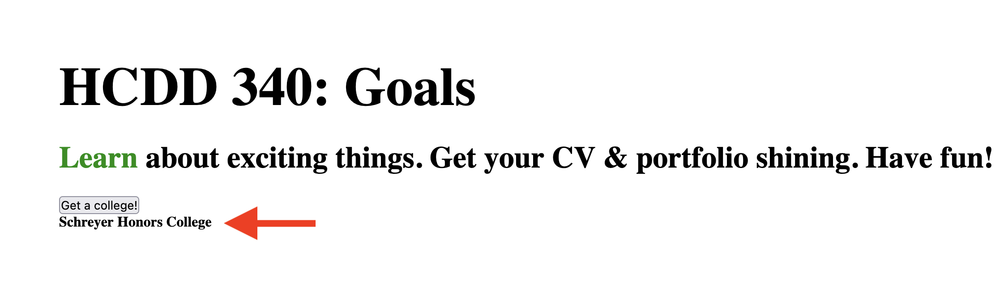

JS III
Today
- Event handling
- Asynchronous JS
- Fetching resources
Recap from last class
- Function
- Objects
- Document Object Model (DOM)
- Events
Functions
function myFunction() {
alert("hello");
}
myFunction();
// calls the function onceParameters
function addition(a, b) {
return a + b;
}
console.log(addition(1, 2));Default parameters
function addition(a, b=10) {
return a + b;
}
console.log(addition(9));
console.log(addition(9, 3));Arrow function
const myAddition = (a, b = 10) => {
return a + b;
}
console.log(myAddition(9));
Arrow function
const oneLiner = (a, b) => a + b;
console.log(oneLiner(12, 5));Arrow function
const noParam = () => {
console.log("hello");
}Higher-order functions
Functions are regular ‘values’
- Assign functions to variables
- Pass a function as an argument to another function
- Return a function from another function
Higher-order functions
- Functions that
- take other functions as arguments
- or, return other functions
Higher-order functions
function repeat(n, action) {
for (let i = 0; i < n; i++) {
action(i);
}
}
// Note console.log is a function
repeat(3, console.log);Higher-order functions
function greaterThan(n) {
return m => m > n;
}
let greaterThan10 = greaterThan(10);
console.log(greaterThan10(11));Anonymous function
function repeat(n, action) {
for (let i = 0; i < n; i++) {
action(i);
}
}
let labels = [];
repeat(5, i => {
labels.push(i);
});
console.log(labels);
// [ 0, 1, 2, 3, 4 ]DOM
Document Object Model
- Documents are represented by DOM
- “Tree” structure
- We can select and update items in DOM
DOM
index.html
from the last class activity

DOM
Each entry in the tree is a
node
- Root node
- Top node (
HTML)
- Top node (
- Parent node
- Child node
- Descendant node
- Sibling node
Selecting nodes
Using CSS selectors
document.querySelectorreturns- the first element that matches the selector
- or,
nullif no match
Selecting nodes
Using CSS selectors
// first element matching a class
document.querySelector(".myclass");
// by id
document.querySelector("#log");
Selecting nodes
Using CSS selectors
/* first element with
- with the name "login"
- located inside a `<div>`
- with the class `user-panel main`
*/
document.querySelector(
"div.user-panel.main input[name='login']"
);
Selecting nodes
querySelectorAll()
returns all matching nodes as an array
Updating nodes
Text or link
const link = document.querySelector("a");
link.textContent = "HCDD 340";
link.href = "https://hcdd-340.github.io/"Updating nodes
Updating nodes
Manipulating styles
para.style.color = "white";
para.style.backgroundColor = "black";
para.style.padding = "10px";
para.style.width = "250px";
para.style.textAlign = "center";What’s this?
this points to
current object
const person = {
// …
introduceSelf() {
console.log(`Hi! I'm ${this.name[0]}.`);
},
};this points to
current object
const person1 = {
name: "Chris",
introduceSelf() {
console.log(`Hi! I'm ${this.name}.`);
},
};
const person2 = {
name: "Deepti",
introduceSelf() {
console.log(`Hi! I'm ${this.name}.`);
},
};What will happen for person1.introduceSelf()?
Setting values
dot or bracket notation
person.age = 45;
person["name"]["last"] = "Cratchit";Objects
Collection of data and functions
const objectName = {
member1Name: member1Value,
member2Name: member2Value,
member3Name: member3Value,
};Creating Objects
const person = {
name: ["Bob", "Smith"],
age: 32,
bio() {
console.log(`${this.name[0]} is ${this.age} years old.`);
},
introduceSelf() {
console.log(`Hi! I'm ${this.name[0]}.`);
},
};Accessing object properties and methods
person.age;
person.bio();
Using dot
Accessing object properties and methods
person["age"];
person["name"]["first"];Using bracket
Handling events
- Events
- Selection, Clicking, Typing
- Many events are possible!
Today
- Event handling
- Fetching resources
- Asynchronous JS
Handling events
- To handle an event
- Attach an event listener to an element
- Using
addEventListener()
- Using
- When an event is fired
- The event listener will be called
- Attach an event listener to an element
Handling events
const button = document.querySelector("button");
button.addEventListener("click", (event) => {
console.log("clicked!")
console.log(event);
});Todo
- Open Activity 11 in VS Code
- Update
main.js(see hints on line 23–27)

Hints
- Add a function called
chooseCollege- using arrow syntax
- When called the function
- it should select a random item from
colleges - update the
<h4>with the selected items
- it should select a random item from
The event object
Contains useful information
const button = document.querySelector("button");
button.addEventListener("click", (event) => {
console.log("clicked!")
console.log(event);
});Todo
- Open Activity 12 in Firefox/Chrome
- Run the following code in Dev Tools –> Console
- Click on the button
const button = document.querySelector("button");
button.addEventListener("click", (event) => {
console.log("clicked!")
console.log(event);
});What do you see in Console?
The event object
button.addEventListener("click", (event) => {
event.target.style.color = "purple";
console.log(event);
});
target points to source of the event
Todo
- Download Activity 13
- Add two event handlers for “HCDD 340: Goals”
- mouseenter
event:
- print: “Entered”
- change color to red
- mouseleave
- print: “Left”
- change color to black
Todo
Today
- Event handling
- Asynchronous JS
- Fetching resources
Asynchronous JS
Resources
JS is single-threaded
Programs can only do one-thing at a time
Long-running tasks will block interactions
Asynchronous programming
- Don’t wait for a long-running task to complete
- synchronous
- Instead, provide a callback function
When the task is completed, it will be called with the result
Conceptually, similar to event handling
- ‘callback’ function to click event
Promise
For asynchronous JS programming
Proxy for values not necessarily known yet
3 possible states in a
Promise- pending: initial state, neither fulfilled nor rejected.
- fulfilled: completed successfully
- rejected: failed
Promise
- It has a
thenmethod, which allows attaching functions - These functions will be called after the task has completed
- when it reaches “fulfilled” or “rejected” states
- You can provide functions for different states
onSuccessonError
Fetching resources
Needs asynchronous programming
- Retrieving data from server can take time
- We don’t want to block everything in the mean time
fetchAPI streamlines these steps- Uses
Promise - Documentation
- Uses
fetch
- Takes an argument
- Path to resource
- Returns a
Promise - Use
thenfunction to:- Attach a function to process the data
- Optionally, attach a function to handle errors
fetch
function onSuccess(response) {
console.log("Success!" + response.status);
}
function onError(error) {
console.log('Oh no! Error: ' + error);
}
fetch('hcdd-340.txt')
.then(onSuccess, onError)
Todo
- Open Activity 14 in Firefox/Chrome
- Open Dev Tools –> Console
- Copy and paste code from the last slide
Todo
- Open Activity 14 in VS Code
- Open Live Preview and copy the URL to Firefox/Chrome
- Open Dev Tools –> Console
- Copy and paste code from the last slide
- Error or Success?
fetch
- Considers a success if there is a response from the server
- Even if there is an
HTTPerror code (e.g., 402)
- Even if there is an
- In our first case:
file:///protocol does not allow network accessonErroris called
fetch
- Considers a success if there is a response from the server
- Even if there is an
HTTPerror code (e.g., 402)
- Even if there is an
- In the second case:
- Got a response from a server
onSuccessis called (even when it is HTTP error code)
Promises for asynchronous programming
Shorthand using an anonymous function
const url = "colleges.json"
const fetchPromise = fetch(url);
console.log(fetchPromise);
fetchPromise.then((response) => {
console.log(`Received response: ${response.status}`);
});“Asynchronicity is contagious”
- A function must be asynchronous, if
- it calls an asynchronous function
- uses return values from an asynchronous function
You can chain Promises to process data
fetchPromise
// if successful, then get `json` data
.then((response) => response.json())
.then((data) => {
console.log(data[0].name); // `then` for second promise
});Error handling in Promise
Handling HTTP error codes
fetchPromise
.then((response) => {
if (!response.ok) {
throw new Error(`HTTP error: ${response.status}`);
}
return response.json();
})
.then((data) => {
console.log(data[0].name);
})
.catch((error) => {
console.error(`Unable to fetch: ${error}`);
});
Todo
- Open Activity 14 in VS Code
- Open Live Preview and copy the URL to Firefox/Chrome
- Open Dev Tools –> Network
- Click on ‘Get a college!’
- What happens?
- Check Dev Tools –> Console
Todo
main.jshandles error (.catch ...)- Make a change so that it prints an error
- i.e., cause an error
Todo
- Open Activity 15
- Update
main.js - We are trying to access Camera
- You will have to attach success and error functions in
main.js
- You will have to attach success and error functions in
Hints
thenin aPromisetakes two functions
async and await
Instead of using then() method
async function getData() {
const url = "colleges.json"
const response = await fetch(url);
console.log(`Received response: ${response.status}`);
}async and
await
async function getData() {
const url = "colleges.json"
const response = await fetch(url);
console.log(`Received response: ${response.status}`);
}async marks that it is an asynchronous function
async and
await
async function getData() {
const url = "colleges.json"
const response = await fetch(url);
console.log(`Received response: ${response.status}`);
}await will cause the function to ‘freeze’ till the
Promise is resolved
async and
await
const url = "colleges.json"
const fetchPromise = fetch(url);
fetchPromise
.then((response) => response.json())
.then((data) => {
console.log(data[0].name);
});==
const getData = async () => {
const url = "colleges.json"
const response = await fetch(url);
const data = await response.json()
console.log(data[0].name)
}async and
await
const getJson = async (url) => {
const response = await fetch(url);
if (!response.ok) {
throw new Error(`Error! ${response}`)
}
const data = await response.json()
console.log(data[0].name)
return data;
}// Calling it from another `async` function
try {
let colleges = await getJson("colleges.json");
} catch(error) {
console.error(error);
}Todo
- Open Activity 15
- Update
main.js - We are trying to access Camera
You will have to attach success and error functions inmain.js- Use
asyncandawait